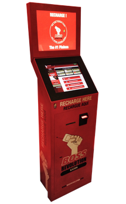

<section class="section section-diff">
  <div class="container">
    <div class="row">
		<div class="project-nav">
	          <a href="#" class="project-close"><i class="fa fa-times-circle-o"></i></a>
	    </div>
		<div class="col-sm-5 col-md-5">
	        
		</div>
		<div class="col-sm- col-md-1"></div>
		<div class="col-sm-6 col-md-6">
        	<h1 >
          		<span>KIOSK</span>
        	</h1>
        	<p>Have a high traffic store? You can’t keep up with the demand and traffic at your location. A Boss Revolution KIOSK is the perfect solution for these environments. A kiosk allows retailers to have a self service station where customers can purchase Boss Revolution products without needing the assistance of a store agent.</p>
			<ul class="characteristics">				
				<h5>
					<li>Same Products. Same Experience</li>
					<li>Customer self-check-out</li>
					<li>Takes Bills. Print Receipts</li>
					<li>No retailer interaction required</li>
					<li>User friendly</li>
				</h5>
			</ul>
      	</div>
    </div>
  </div>
</section>